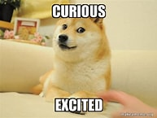

DOGE

Much about. Very curious.
wow
Doge is an doge
This website is a simple project dedicated to the Shiba Inu
and the Internet meme known as Doge.
MADE BY CONSRANT!!
if you steal dis from consrant, he will steal your SOUL!!!
much please. few steal ~Consrant, 2026